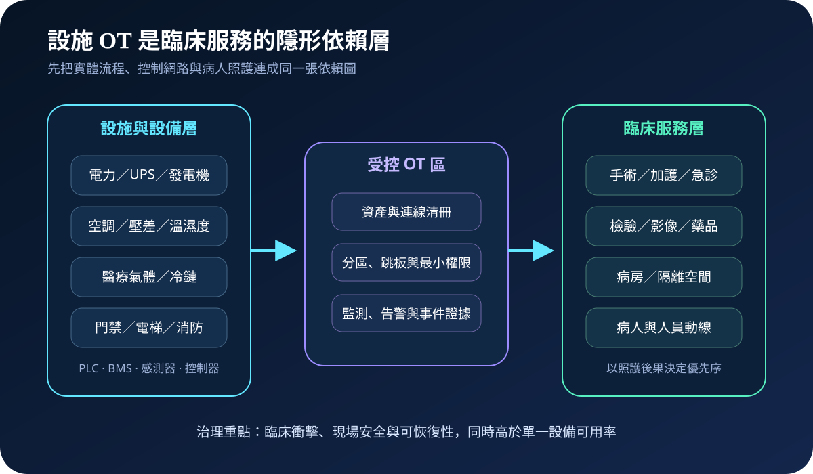
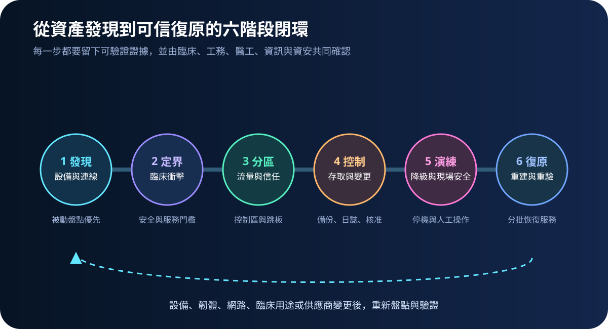
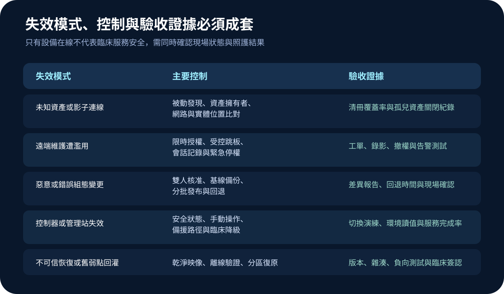

醫療資安國際觀察 · 2026-10-16
醫院設施 OT 如何納入臨床韌性：從資產清冊到安全復原
作者：Dr. William｜醫療資訊與資安治理實務工作者
醫院的電力、空調、壓差、醫療氣體、冷鏈、門禁與電梯由操作科技支撐；控制器或管理站失效時，後果可能直接進入手術、隔離、藥品保存與病人動線。
名詞解釋：OT 保護的是實體流程
操作科技（Operational Technology, OT）用於監測或改變實體設備與流程，常見元件包括 PLC、感測器、控制器、建築管理系統與工程工作站。與一般資訊系統相比，OT 必須同時考量人員安全、環境狀態、設備壽命、即時性與不中斷需求，不能直接套用停機掃描或立即重啟。
國際現況與適用邊界
NIST 於 2026 年 9 月發布 SP 800-82r4 初始公開草案，將 OT 定義擴展到建築自動化等實體環境，並強調安全、可靠性、效能及風險導向控制。CISA 的 OT 資產清冊指引要求建立架構分類、優先資料欄位與持續維護流程，並將清冊視為漏洞管理、事件應變及分區設計的基礎。
台灣適用原則：NIST 草案與 CISA 指引屬美國機構發布的自願性技術參考，並非台灣醫院的直接法定義務。台灣醫療機構可採用依賴盤點、分區、降級及復原證據方法，實際控制仍須依台灣法令、主管機關要求、院內風險評估與設備安全限制辦理。
規劃：先定義範圍、角色與驗收
範圍宜從影響病人安全與服務連續性的系統開始，例如電力、壓差、冷鏈與醫療氣體。角色至少涵蓋工務、醫工、臨床、資訊、資安、職安、採購及維護商。驗收指標可包含清冊覆蓋率、未知連線關閉時間、高風險遠端帳號限時率、基線備份成功率、手動操作啟動時間及分批復原通過率。
實作：六階段建立可恢復控制
- 發現：以被動方式盤點設備、韌體、通訊、位置、擁有者與供應商。
- 定界：連結臨床用途、安全狀態、可容忍中斷及人工替代能力。
- 分區：分離控制、管理、供應商與一般資訊網路，限制必要流量。
- 控制：採限時存取、雙人核准、組態備份、變更紀錄與獨立日誌。
- 演練：測試控制器失效、遠端維護濫用、網路中斷與手動降級。
- 復原：使用可信映像與組態分區重建，再由現場與臨床共同驗收。

風險：可用不等於可信
常見失敗包括主動掃描影響舊設備、清冊沒有實體位置與責任人、供應商帳號長期開放、組態備份與正式環境共用管理權，以及復原後只看主機上線。控制設計需要先確認設備安全限制；無法修補時，以隔離、流量限制、監測、人工巡檢與退場計畫降低風險。

可執行清單
- 高影響設施 OT 是否有設備、位置、用途、擁有者、版本與連線紀錄？
- 遠端維護是否經工單、限時授權、受控跳板與會話保存？
- 控制網路是否與一般辦公、訪客及供應商通道分區？
- 組態、韌體與工程站是否有離線或不可變更的可信備份？
- 手動操作、安全狀態及臨床降級流程是否完成跨部門演練？
- 復原驗收是否同時檢查設備、環境、網路、告警與照護結果？
來源
- NIST｜SP 800-82 Rev. 4 Initial Public Draft, Guide to Operational Technology Security（發布：2026-09-21；文件性質：初始公開草案；查閱：2026-10-16）
- CISA｜Foundations for OT Cybersecurity: Asset Inventory Guidance for Owners and Operators（發布：2025-08-13；查閱：2026-10-16）
內容說明
本文依健康台灣深耕計畫相關治理內容整理，並參考 NIST 與 CISA 公開資料，提出醫院設施 OT 的盤點、控制、降級與復原方法；不把外國草案或指引視為台灣法定義務，也不取代設備製造商安全條件、主管機關公告、醫療專業判斷或法律意見。